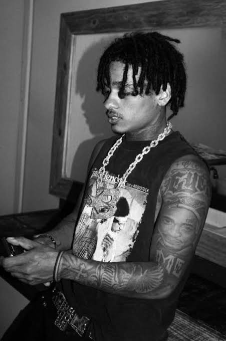

DEADLINE // SIGNAL_02
ARTIST_002 // TRAP / RAGE
BRANDÃO
SEM FÓRMULA. SEM PAUSA. BRANDÃO ENTRA NA LINHA COM UMA MISTURA DE ATITUDE, MELODIA E PESO, TRAZENDO OUTRA FREQUÊNCIA PRO DEADLINE. NÃO É SÓ SHOW. É SINAL.
STYLETRAP / RAGESTAGEDEAD STAGESTATUSCONFIRMED
ORIGEMCAPONGA — CE
HIT // 001JAPONÊS
LISTEN_SIGNALJAPONÊS // SPOTIFY